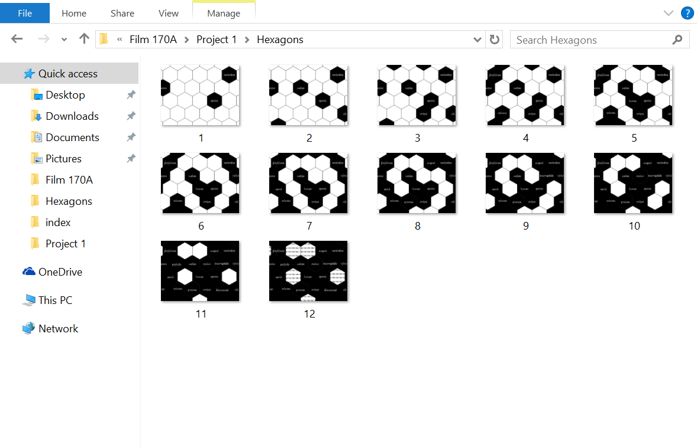
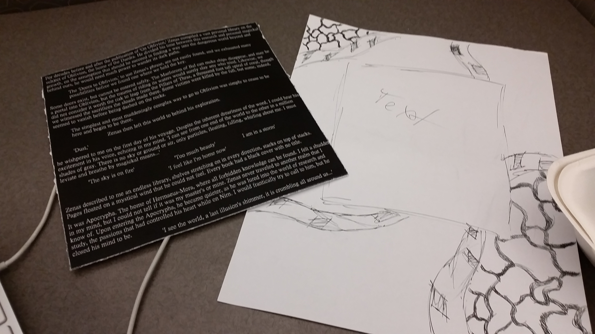
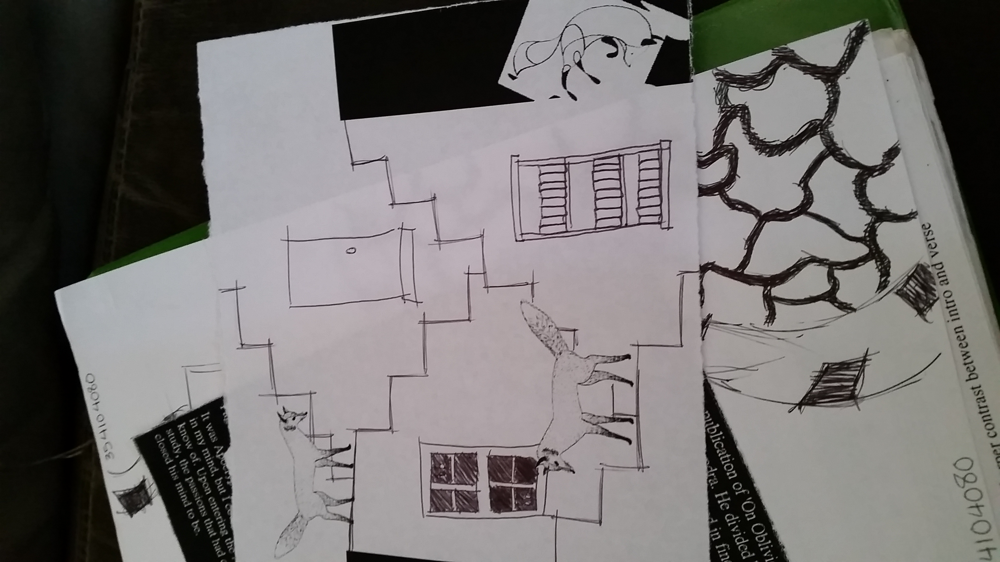

Maze or Manifesto?
Artist's Statement
A hypertext labyrinth delivers a narrative shaped by the user. The narrative is packaged in a series of photos that are interconnected by web links. The links are determined randomly and designed to let the player develop their own story and experience. This technique of storytelling is categorized as a form of New Media. With the rise of technology, specifically the computer, and its integration into our culture, artists have taken hold of it as a new platform for expression.
Our hypertext labyrinth is composed of a series of photos that relate to the Library of Babel, a short story by Jorge Luis Borges. My 3 pages in our total of 15 picture a block of text with surrounding imagery, three foxes in a maze of stairs with one falling down a dark shaft, and a gif of hexagons blackening with white text in their center. I focused the first two pages on libraries that appear in Elder Scrolls: Oblivion and in Avatar: The Last Airbender, respectively. The first page takes excerpts from a story in Oblivion, where a student's teacher goes into oblivion and finds the library Apocrypha. The teacher never returns and preaches of the destruction of humans. The second page references Avatar's Wan Shi Tong's Library. The foxes are related to the Knowledge Seeker's in Avatar, which take the form a fox. Wan Shi Tong's Library descended into the sand with all its inhabitants after Wan Shi Tong found someone attempting to use the knowledge of the library for destruction. The third page reveals primary words from this sentence in Jorges' story
"Perhaps my old age and fearfulness deceive me, but I suspect that the human species -- the unique species -- is about to be extinguished, but the Library will endure: illuminated, solitary, infinite, perfectly motionless, equipped with precious volumes, useless, incorruptible, secret."
The three pages I made serve to convey the madness of humans when they are given knowledge. They treat it as a chance for power and sink into insanity or barbarity. The teacher remains in hell, the foxes endanger themselves, and humans remain at the mercy of the enduring Library.
Documentation


